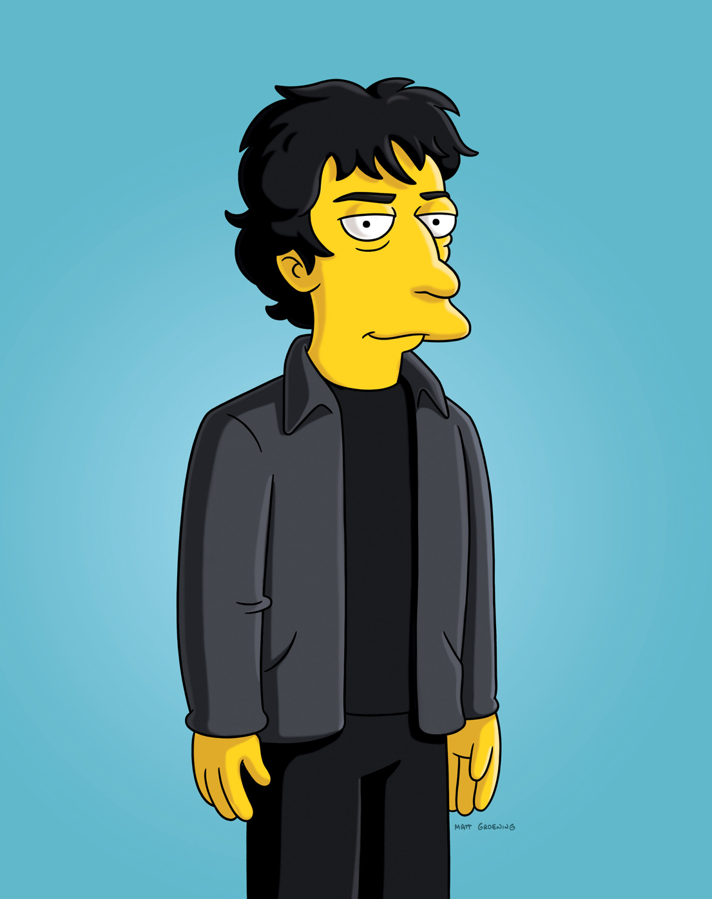

For his seventh birthday, Gaiman received C. S. Lewis's The Chronicles of Narnia series.
He later recalled that "I admired his use of parenthetical statements to the reader, where he would just talk to you ... I'd think, 'Oh, my gosh, that is so cool! I want to do that! When I become an author, I want to be able to do things in parentheses.' I liked the power of putting things in brackets."
Narnia also introduced him to literary awards, specifically the 1956 Carnegie Medal won by the concluding volume. When Gaiman won the 2010 Medal himself, the press reported him recalling, "it had to be the most important literary award there ever was"and observing, "if you can make yourself aged seven happy, you're really doing well – it's like writing a letter to yourself aged seven."
Presenter: Joanna Chang
Back to the homepage